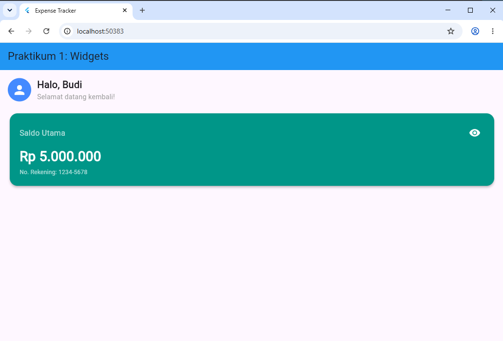
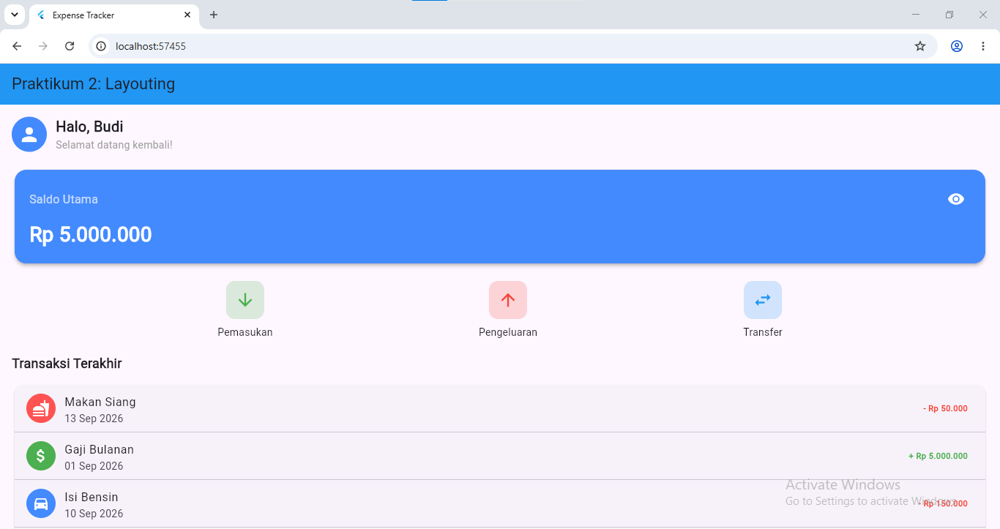

Flutter adalah framework open-source dari Google yang digunakan untuk
membangun aplikasi mobile, web, dan desktop dari satu basis kode (single
codebase) menggunakan bahasa pemrograman Dart. Konsep utama dalam Flutter
adalah segala sesuatu di tampilan aplikasi merupakan sebuah widget, mulai
dari teks, tombol, hingga layout secara keseluruhan.
Pada praktikum ini, dipelajari dua topik dasar dalam pengembangan aplikasi
Flutter. Praktikum 1 membahas pengenalan widget, khususnya perbedaan antara
StatelessWidget dan StatefulWidget, serta penerapan fungsi setState() untuk
membuat tampilan yang interaktif. Praktikum 2 melanjutkan dengan konsep
layouting dan styling menggunakan widget Row, Column, Container, dan
ListTile untuk menyusun tampilan aplikasi yang lebih rapi dan terstruktur,
dengan studi kasus membangun dashboard sederhana aplikasi keuangan (Expense
Tracker).
2 Tujuan Praktikum
Setelah menyelesaikan praktikum ini, mahasiswa diharapkan mampu:
Memahami kerangka dasar aplikasi Flutter (MaterialApp dan Scaffold).
Membedakan penggunaan StatelessWidget dan StatefulWidget.
Menerapkan fungsi setState() untuk membuat UI yang interaktif.
Menerapkan widget Row untuk menyusun deretan elemen secara horizontal, seperti deretan tombol aksi.
Menerapkan widget Column untuk menyusun elemen secara vertikal, seperti daftar transaksi.
Mengatur padding, margin, dan warna pada Container untuk mempercantik tampilan.
Menggunakan ListTile untuk membuat baris daftar (list) secara instan dan rapi.
void main() — Titik masuk (entry point) aplikasi. Fungsi runApp(const MyApp()) memerintahkan Flutter untuk menjalankan widget MyApp sebagai akar (root) dari seluruh aplikasi.
class MyApp — Merupakan StatelessWidget karena konfigurasi aplikasi (judul, tema, halaman awal) tidak pernah berubah selama aplikasi berjalan. Di dalamnya terdapat MaterialApp, yaitu widget bawaan Flutter yang menyediakan struktur dasar aplikasi bergaya Material Design. Properti home: const DashboardScreen() menentukan bahwa DashboardScreen adalah halaman yang pertama kali ditampilkan.
class DashboardScreen — Menggunakan Scaffold, yaitu kerangka halaman standar yang menyediakan struktur seperti AppBar (bilah judul di atas) dan body (isi halaman). Di dalam body, digunakan Padding agar konten tidak menempel ke tepi layar, lalu Column untuk menyusun GreetingWidget dan BalanceCardWidget secara vertikal, dengan SizedBox(height: 20) sebagai jarak antar keduanya.
class GreetingWidget — StatelessWidget yang menampilkan sapaan. Menggunakan Row agar CircleAvatar (ikon profil) dan Column (dua baris teks sapaan) tersusun sejajar dari kiri ke kanan. Karena tidak ada data yang berubah, tidak diperlukan setState() di sini.
class BalanceCardWidget — StatefulWidget karena kartu ini punya data yang bisa berubah, yaitu status tampil/sembunyi saldo. Kelas ini dipasangkan dengan _BalanceCardWidgetState yang menyimpan variabel _isBalanceVisible.
IconButton pada bagian kanan atas kartu memanggil fungsi _toggleVisibility() setiap kali ditekan.
Di dalam _toggleVisibility(), dipanggil setState(() { _isBalanceVisible = !_isBalanceVisible; }). Pemanggilan setState() inilah yang memberi tahu Flutter bahwa data berubah, sehingga method build() dijalankan ulang dan tampilan diperbarui secara otomatis.
Teks nominal saldo menggunakan operator ternary _isBalanceVisible ? 'Rp 5.000.000' : 'Rp *********' untuk menampilkan angka asli atau versi tersensor tergantung nilai boolean tersebut.
Sebagai tugas tambahan, warna kartu diubah menjadi Colors.teal dan ditambahkan teks statis "No. Rekening: 1234-5678" di bawah nominal saldo.
Hasilnya:

Gambar 1. Tampilan hasil Praktikum 1 — sapaan pengguna dan kartu saldo dengan toggle visibility
Hasil menunjukkan sebuah kartu berwarna (awalnya biru, setelah dimodifikasi
menjadi teal) di bawah sapaan "Halo, Budi!". Kartu tersebut menampilkan
tulisan "Total Saldo" beserta nominalnya dan sebuah ikon mata di pojok
kanan. Saat ikon mata ditekan, nominal saldo berpindah antara ditampilkan
penuh ("Rp 5.000.000") dan disensor ("Rp *********"), membuktikan bahwa
StatefulWidget dan setState() berhasil membuat tampilan bereaksi terhadap
interaksi pengguna, sementara bagian sapaan di atasnya tetap statis (tidak
berubah) karena dibangun dengan StatelessWidget.
import 'package:flutter/material.dart';
void main() {
runApp(const MyApp());
}
// 1. WIDGET UTAMA (Root Aplikasi)
class MyApp extends StatelessWidget {
const MyApp({super.key});
@override
Widget build(BuildContext context) {
return MaterialApp(
debugShowCheckedModeBanner: false,
title: 'Expense Tracker',
theme: ThemeData(
primarySwatch: Colors.blue,
),
home: const DashboardScreen(),
);
}
}
// 2. HALAMAN UTAMA (Scaffold) - DIPERBARUI
class DashboardScreen extends StatelessWidget {
const DashboardScreen({super.key});
@override
Widget build(BuildContext context) {
return Scaffold(
appBar: AppBar(
title: const Text('Praktikum 2: Layouting'),
backgroundColor: Colors.blue,
),
// MENGGUNAKAN SingleChildScrollView agar layar bisa di-scroll
body: const SingleChildScrollView(
child: Padding(
padding: EdgeInsets.all(16.0),
child: Column(
crossAxisAlignment: CrossAxisAlignment.start,
children: [
GreetingWidget(), // Dari Modul 1
SizedBox(height: 20),
BalanceCardWidget(), // Dari Modul 1
SizedBox(height: 20),
ActionButtonsWidget(), // WIDGET BARU MODUL 2
SizedBox(height: 20),
RecentTransactionsWidget(), // WIDGET BARU MODUL 2
],
),
),
),
);
}
}
// 3. STATELESS WIDGET (Sapaan - Dari Modul 1)
class GreetingWidget extends StatelessWidget {
const GreetingWidget({super.key});
@override
Widget build(BuildContext context) {
return const Row(
children: [
CircleAvatar(
radius: 24,
backgroundColor: Colors.blueAccent,
child: Icon(Icons.person, size: 30, color: Colors.white),
),
SizedBox(width: 12),
Column(
crossAxisAlignment: CrossAxisAlignment.start,
children: [
Text('Halo, Budi', style: TextStyle(fontSize: 20, fontWeight: FontWeight.bold)),
Text('Selamat datang kembali!', style: TextStyle(fontSize: 14, color: Colors.grey)),
],
),
],
);
}
}
// 4. STATEFUL WIDGET (Kartu Saldo - Dari Modul 1)
class BalanceCardWidget extends StatefulWidget {
const BalanceCardWidget({super.key});
@override
State<BalanceCardWidget> createState() => _BalanceCardWidgetState();
}
class _BalanceCardWidgetState extends State<BalanceCardWidget> {
bool _isBalanceVisible = true;
void _toggleVisibility() {
setState(() {
_isBalanceVisible = !_isBalanceVisible;
});
}
@override
Widget build(BuildContext context) {
return Card(
elevation: 4,
shape: RoundedRectangleBorder(borderRadius: BorderRadius.circular(16)),
color: Colors.blueAccent,
child: Padding(
padding: const EdgeInsets.all(20.0),
child: Column(
crossAxisAlignment: CrossAxisAlignment.start,
children: [
Row(
mainAxisAlignment: MainAxisAlignment.spaceBetween,
children: [
const Text('Saldo Utama', style: TextStyle(fontSize: 16, color: Colors.white70)),
IconButton(
icon: Icon(_isBalanceVisible ? Icons.visibility : Icons.visibility_off, color: Colors.white),
onPressed: _toggleVisibility,
),
],
),
const SizedBox(height: 8),
Text(
_isBalanceVisible ? 'Rp 5.000.000' : 'Rp *********',
style: const TextStyle(fontSize: 28, fontWeight: FontWeight.bold, color: Colors.white),
),
],
),
),
);
}
}
// 5. WIDGET TOMBOL AKSI (ROW) - BARU
class ActionButtonsWidget extends StatelessWidget {
const ActionButtonsWidget({super.key});
@override
Widget build(BuildContext context) {
// Menggunakan Row untuk menata tombol secara horizontal
return Row(
mainAxisAlignment: MainAxisAlignment.spaceEvenly, // Jarak dibagi rata
children: [
_buildActionButton(Icons.arrow_downward, 'Pemasukan', Colors.green),
_buildActionButton(Icons.arrow_upward, 'Pengeluaran', Colors.red),
_buildActionButton(Icons.swap_horiz, 'Transfer', Colors.blue),
],
);
}
// Fungsi pembantu untuk membuat desain tombol agar kode tidak berulang
Widget _buildActionButton(IconData icon, String label, Color color) {
return Column(
children: [
// Container untuk membungkus ikon dengan warna background
Container(
padding: const EdgeInsets.all(12),
decoration: BoxDecoration(
color: color.withOpacity(0.2), // Warna transparan
borderRadius: BorderRadius.circular(12),
),
child: Icon(icon, color: color, size: 28),
),
const SizedBox(height: 8),
Text(
label,
style: const TextStyle(fontWeight: FontWeight.w500),
),
],
);
}
}
// Model bantuan sederhana untuk satu baris transaksi,
// supaya menambah transaksi baru (Tugas 2) tidak perlu menulis ulang ListTile+Divider.
class _TransaksiItem {
final IconData icon;
final Color iconColor;
final String title;
final String tanggal;
final String nominal;
final bool isPengeluaran; // true = pengeluaran (merah), false = pemasukan (hijau)
const _TransaksiItem({
required this.icon,
required this.iconColor,
required this.title,
required this.tanggal,
required this.nominal,
required this.isPengeluaran,
});
}
// 6. WIDGET DAFTAR TRANSAKSI (COLUMN & LISTTILE) - BARU
class RecentTransactionsWidget extends StatelessWidget {
const RecentTransactionsWidget({super.key});
// TUGAS 2: 2 transaksi fiktif baru ditambahkan di akhir daftar (Belanja Bulanan, Terima Bonus)
static const List<_TransaksiItem> _daftarTransaksi = [
_TransaksiItem(
icon: Icons.fastfood,
iconColor: Colors.redAccent,
title: 'Makan Siang',
tanggal: '13 Sep 2026',
nominal: '- Rp 50.000',
isPengeluaran: true,
),
_TransaksiItem(
icon: Icons.attach_money,
iconColor: Colors.green,
title: 'Gaji Bulanan',
tanggal: '01 Sep 2026',
nominal: '+ Rp 5.000.000',
isPengeluaran: false,
),
_TransaksiItem(
icon: Icons.directions_car,
iconColor: Colors.blueAccent,
title: 'Isi Bensin',
tanggal: '10 Sep 2026',
nominal: '- Rp 150.000',
isPengeluaran: true,
),
// ----- Transaksi fiktif baru (Tugas 2) -----
_TransaksiItem(
icon: Icons.shopping_cart,
iconColor: Colors.orange,
title: 'Belanja Bulanan',
tanggal: '15 Sep 2026',
nominal: '- Rp 300.000',
isPengeluaran: true,
),
_TransaksiItem(
icon: Icons.card_giftcard,
iconColor: Colors.green,
title: 'Terima Bonus',
tanggal: '17 Sep 2026',
nominal: '+ Rp 750.000',
isPengeluaran: false,
),
];
@override
Widget build(BuildContext context) {
return Column(
crossAxisAlignment: CrossAxisAlignment.start,
children: [
const Text(
'Transaksi Terakhir',
style: TextStyle(fontSize: 18, fontWeight: FontWeight.bold),
),
const SizedBox(height: 12),
// Menggunakan Card agar daftar transaksi memiliki bayangan/bingkai
Card(
elevation: 2,
shape: RoundedRectangleBorder(borderRadius: BorderRadius.circular(12)),
child: Column(
children: [
for (int i = 0; i < _daftarTransaksi.length; i++) ...[
ListTile(
leading: CircleAvatar(
backgroundColor: _daftarTransaksi[i].iconColor,
child: Icon(_daftarTransaksi[i].icon, color: Colors.white),
),
title: Text(_daftarTransaksi[i].title),
subtitle: Text(_daftarTransaksi[i].tanggal),
// TUGAS 1: warna merah untuk pengeluaran, hijau untuk pemasukan
trailing: Text(
_daftarTransaksi[i].nominal,
style: TextStyle(
color: _daftarTransaksi[i].isPengeluaran ? Colors.red : Colors.green,
fontWeight: FontWeight.bold,
),
),
),
if (i != _daftarTransaksi.length - 1) const Divider(height: 1),
],
],
),
),
],
);
}
}
Penjelasan kode:
class DashboardScreen (diperbarui) — body kini dibungkus dengan SingleChildScrollView sebelum Padding dan Column. Ini diperlukan karena daftar widget yang ditampilkan bertambah banyak (gabungan Praktikum 1 dan 2), sehingga tanpa SingleChildScrollView, layar akan mengalami overflow (konten terpotong) ketika tinggi total melebihi tinggi layar.
class ActionButtonsWidget — StatelessWidget yang menyusun tiga tombol aksi (Pemasukan, Pengeluaran, Transfer) menggunakan Row dengan mainAxisAlignment: MainAxisAlignment.spaceEvenly, sehingga jarak antar tombol maupun jarak ke tepi terbagi sama rata. Setiap tombol dibuat melalui fungsi bantu _buildActionButton() agar kode tidak ditulis berulang untuk tiga tombol berbeda. Di dalamnya, Container digunakan untuk membungkus ikon dengan padding, latar warna transparan (color.withOpacity(0.2)), dan sudut membulat (borderRadius).
class RecentTransactionsWidget — StatelessWidget yang menampilkan daftar riwayat transaksi. Judul "Transaksi Terakhir" dan daftar transaksi disusun ke bawah menggunakan Column. Daftar transaksi dibungkus Card agar memiliki bayangan (elevation) dan sudut membulat.
Setiap baris transaksi memakai ListTile dengan tiga bagian: leading (ikon dalam CircleAvatar), title (nama transaksi), subtitle (tanggal), dan trailing (nominal transaksi).
Antar baris transaksi dipisahkan dengan Divider(height: 1) agar daftar terlihat rapi.
Sebagai tugas tambahan, warna teks pada trailing diatur otomatis lewat properti isPengeluaran: merah (Colors.red) jika transaksi adalah pengeluaran, dan hijau (Colors.green) jika pemasukan. Selain itu, ditambahkan dua transaksi fiktif baru ("Belanja Bulanan" dan "Terima Bonus") ke dalam daftar yang sama tanpa perlu menulis ulang ListTile secara manual, karena data transaksi disimpan dalam satu list (_daftarTransaksi) dan ditampilkan menggunakan perulangan for.
Hasilnya:

Gambar 2. Tampilan hasil Praktikum 2 — dashboard lengkap dengan tombol aksi dan daftar transaksi terakhir
Hasil menunjukkan tampilan dashboard yang lebih lengkap: bagian sapaan dan
kartu saldo dari Praktikum 1 tetap ada di bagian atas, diikuti oleh tiga
tombol aksi (Masuk, Keluar, Transfer) yang tersusun sejajar dengan ikon
berwarna berbeda (hijau, merah, biru), dan di bawahnya daftar "Transaksi
Terakhir" yang menampilkan setiap transaksi lengkap dengan ikon, judul,
tanggal, dan nominal. Nominal pengeluaran (misalnya "Makan Siang", "Isi
Bensin", "Belanja Bulanan") tampil berwarna merah dengan tanda minus,
sedangkan nominal pemasukan (misalnya "Gaji Bulanan", "Terima Bonus")
tampil berwarna hijau dengan tanda plus. Keseluruhan halaman dapat
digulir (scroll) tanpa error overflow, membuktikan SingleChildScrollView
bekerja dengan baik menampung seluruh komponen dari Praktikum 1 dan 2
dalam satu layar.
4 Kesimpulan
Berdasarkan praktikum yang telah dilakukan, dapat disimpulkan bahwa
Flutter menyediakan dua jenis widget utama dengan fungsi yang berbeda,
yaitu StatelessWidget untuk tampilan statis dan StatefulWidget untuk
tampilan yang dapat berubah secara dinamis melalui fungsi setState().
Selain itu, penyusunan tata letak (layout) pada Flutter sangat
bergantung pada kombinasi widget dasar seperti Row untuk penyusunan
horizontal, Column untuk penyusunan vertikal, Container untuk pengaturan
padding/margin/warna, dan ListTile untuk membuat daftar yang rapi secara
instan. Dengan menggabungkan widget-widget tersebut, dapat dibangun
tampilan dashboard aplikasi yang informatif, interaktif, dan dapat
menyesuaikan diri terhadap perubahan data maupun panjang konten, seperti
yang diterapkan pada studi kasus aplikasi Expense Tracker dalam
praktikum ini.